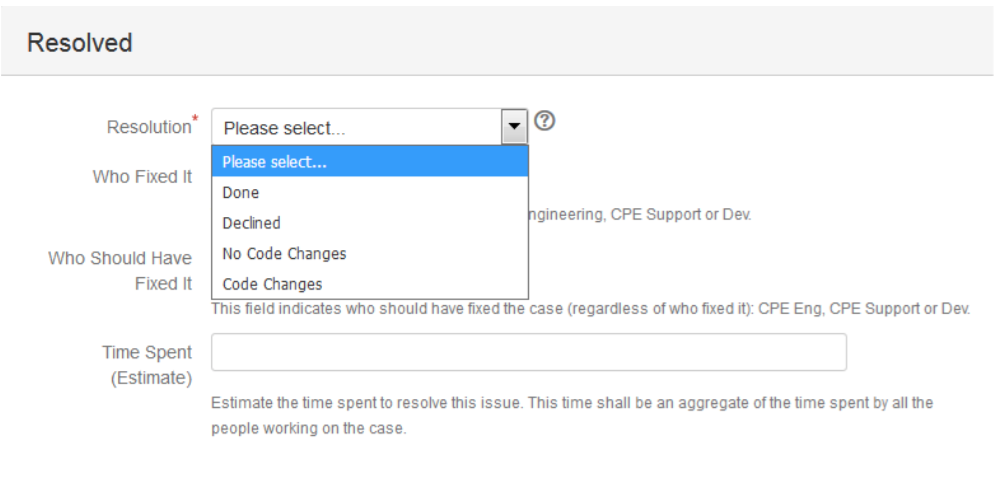

Resolving an Escalation (CPE DU | DL | DC, CPE Escalations and CPE Help)¶
If CPE is Done with the Escalation¶

- Change the status of the escalation to “Resolved”: An escalation can be resolved when Support confirms that the CPE work is done for this escalation. When resolving the escalation a new screen will pop up.
- Populate the resolution code:
- Code Changes: Resolving the case involved code changes (and normally a new defect). If the escalation was tied to a defect but the defect was available and no new code changes were needed, the resolution code should be “No Code Changes”. Product documentation changes can be included in this category.
- No Code Changes: Resolving the cases didn’t involve code changes.
- Declined: The escalation was declined for whatever reason.
- Done: This category is for those casese that don’t correspond to “Code Changes” or “No Code Changes”. An escalation manager should revisit these cases to understand if new categories/resolution codes should be added to the list.
- Populate the time spent in the resolution of the issue (obvioulsy, this is an estimate).
- Enter comments if necessary.
- Communicate to Support that the escalation is being resolved.
If the Escalation Needs to Be Reopened:¶
- Change the status to “Reopen”.
- Work the case as if it’s in the status “Fix in Progress”. Use the “Reopen” status so we can obtain reports on how many escalations needed to be reopened. Eventually change the status to “Need More Information”, “On Hold”, or “Escalation Management” if necessary.
What to Do with Solved DU/DL/DC Tickets¶
These tickets aren’t addressed to CPE but reported to gather quality metrics regarding the number of DU/DL/DC cases that impact customers. The process to handle these tickets needs to be defined/discussed.